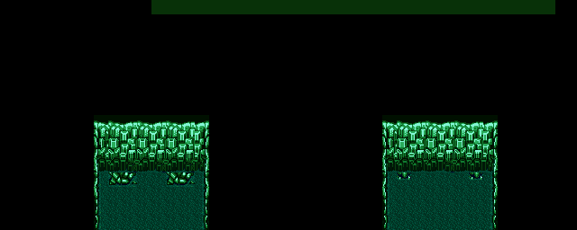
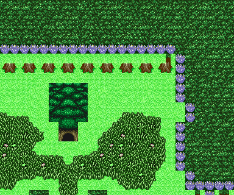
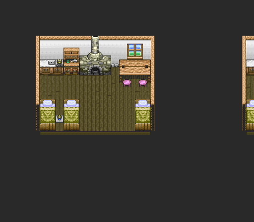

받는 방법 보기
새 게임은 하트 1개로 시작합니다. 따로 찾아 얻는 보상은 아니에요.
CHACHA’S LITTLE COLLECTION
작은 상자와 비밀스러운 부탁 속에도 하트가 숨어 있어요.
모은 곳을 체크하며 스무 개를 모두 찾아보세요.
0 / 20체크는 게임 저장과 별개입니다.
시작할 때 가진 1개 + 모험 중 얻는 19개 = 최대 20개입니다. 세라비의 장별 보상 7개, 부엉이 1개, 상자 3개, 비밀 대화 1개, 테일 1개, 차탄 5개, 홀리 1개를 확인하세요.
테일 찾기 시험은 첫 시도에 맞혀야 하트를 받습니다. 통에 숨은 사람의 행방도 알려 주면 안 돼요. 두 이벤트 전에는 저장을 나눠 두세요.
상세한 위치와 선택지는 아래 「받는 방법 보기」 안에 접어 두었습니다.
새 게임은 하트 1개로 시작합니다. 따로 찾아 얻는 보상은 아니에요.
천막 지하에서 부엉이의 질문에 「출구 어디예요?」를 고르세요. 다른 질문을 골라도 다시 물을 수 있습니다. 다몽과 싸우기 전에 하트와 보급품을 받습니다.
1화 공략 →1화의 사건을 마치고 집으로 돌아와 세라비 선생님에게 말을 걸어 쉬는 선택지를 고르세요. 다음 화로 넘어가기 전에 하트를 1개 받습니다. 1~7화에서 각각 한 번, 모두 7개예요.
1화 공략 →2화의 사건을 마치고 집으로 돌아와 세라비 선생님에게 말을 걸어 쉬는 선택지를 고르세요. 다음 화로 넘어가기 전에 하트를 1개 받습니다. 1~7화에서 각각 한 번, 모두 7개예요.
2화 공략 →3화의 사건을 마치고 집으로 돌아와 세라비 선생님에게 말을 걸어 쉬는 선택지를 고르세요. 다음 화로 넘어가기 전에 하트를 1개 받습니다. 1~7화에서 각각 한 번, 모두 7개예요.
3화 공략 →4화의 사건을 마치고 집으로 돌아와 세라비 선생님에게 말을 걸어 쉬는 선택지를 고르세요. 다음 화로 넘어가기 전에 하트를 1개 받습니다. 1~7화에서 각각 한 번, 모두 7개예요.
4화 공략 →5화의 사건을 마치고 집으로 돌아와 세라비 선생님에게 말을 걸어 쉬는 선택지를 고르세요. 다음 화로 넘어가기 전에 하트를 1개 받습니다. 1~7화에서 각각 한 번, 모두 7개예요.
5화 공략 →6화의 사건을 마치고 집으로 돌아와 세라비 선생님에게 말을 걸어 쉬는 선택지를 고르세요. 다음 화로 넘어가기 전에 하트를 1개 받습니다. 1~7화에서 각각 한 번, 모두 7개예요.
6화 공략 →7화의 사건을 마치고 집으로 돌아와 세라비 선생님에게 말을 걸어 쉬는 선택지를 고르세요. 다음 화로 넘어가기 전에 하트를 1개 받습니다. 1~7화에서 각각 한 번, 모두 7개예요.
7화 공략 →요정의 샘으로 가는 동굴에는 입구가 세 개 나란히 있는 갈림길이 있어요. 가운데와 오른쪽의 막다른 방에서 각각 하트를 얻습니다. 한 방만 보고 돌아오지 마세요. 2화에 열지 않았다면 7~8화에 다시 살펴보세요. 이미 연 상자는 다시 받을 수 없습니다.

12① 가운데 입구의 방 · ② 오른쪽 입구의 방. 입구가 다른 두 방입니다. 표시는 상자가 놓이는 자리이며, 배경 지도에는 인물과 상자 그림을 생략했습니다.
위의 세 갈래에서 오른쪽 입구로 들어가 상자를 여세요. 가운데 방의 상자와 별개의 하트입니다.
현실 세계 학교 북동쪽 맨홀로 내려가 니포포 마크를 이용해 숲으로 가세요. 찌릿찌릿 망치 상자와 나란히 있는 두 상자 중 오른쪽이 하트입니다. 꼬리냥 들판 쪽 입구 부근이에요.

1① 하트 상자 자리. 왼쪽의 다른 상자는 찌릿찌릿 망치입니다. 배경 지도에는 인물과 상자 그림을 생략했습니다.
8화 마지막 준비 →처음부터 통만 계속 조사해서는 보상이 나오지 않아요. 찾는 사람에게 「몰라」라고 답한 기록이 필요합니다. 「알아」로 밀고한 뒤에는 이 보상을 정상 진행으로 되돌릴 수 없으니 대화 전에 저장해 두세요.

17화 술꾼 아저씨 집의 배경과 숨은 사람 자리. 실제 화면에는 통과 인물도 함께 보입니다.
아는 사람을 묻는 질문에는 「테일」을 고르고, 시험에서 초록 옷의 테일을 한 번에 찾으세요. 테일이 바로 알아봐 줘서 기쁘다며 하트를 줍니다.
다른 사람을 한 번이라도 고르면 재도전은 가능해도 하트 보상은 사라집니다. 시험 전에 별도 저장을 남기는 것이 좋아요.
7화 공략 →보라 차탄과의 전투에서 이긴 뒤 이어지는 대화를 마치면 하트를 1개 받습니다. 다섯 전투에서 각각 하나씩, 모두 5개입니다. 줄 세우기 퍼즐의 보상과 혼동하지 마세요.
흰색 차탄과의 전투에서 이긴 뒤 이어지는 대화를 마치면 하트를 1개 받습니다. 다섯 전투에서 각각 하나씩, 모두 5개입니다. 줄 세우기 퍼즐의 보상과 혼동하지 마세요.
초록 차탄과의 전투에서 이긴 뒤 이어지는 대화를 마치면 하트를 1개 받습니다. 다섯 전투에서 각각 하나씩, 모두 5개입니다. 줄 세우기 퍼즐의 보상과 혼동하지 마세요.
빨강 차탄과의 전투에서 이긴 뒤 이어지는 대화를 마치면 하트를 1개 받습니다. 다섯 전투에서 각각 하나씩, 모두 5개입니다. 줄 세우기 퍼즐의 보상과 혼동하지 마세요.
노랑 차탄과의 전투에서 이긴 뒤 이어지는 대화를 마치면 하트를 1개 받습니다. 다섯 전투에서 각각 하나씩, 모두 5개입니다. 줄 세우기 퍼즐의 보상과 혼동하지 마세요.
지저성 사건을 거쳐 니포포 대신전으로 돌아온 뒤, 마지막 탑으로 향하기 전에 홀리에게 하트를 받습니다. 마지막 전투에 들어가기 전에 보상 대화를 마치세요.
8화 공략 →